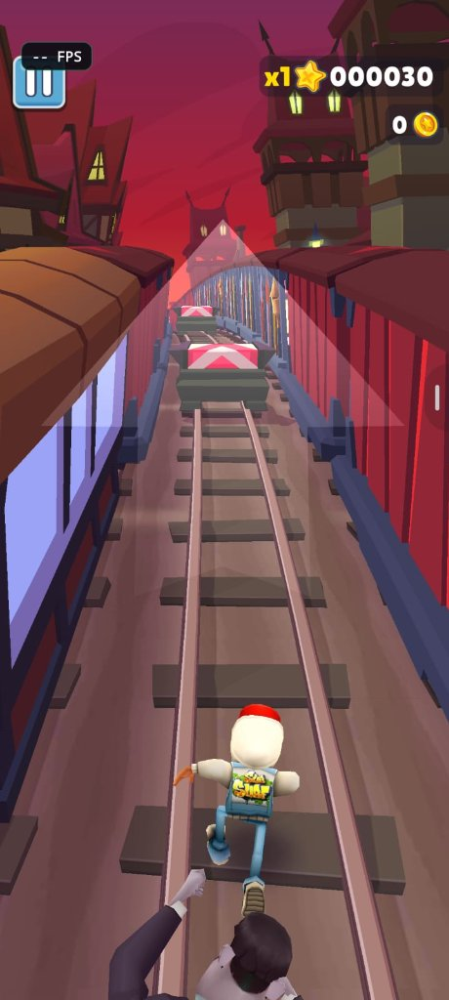
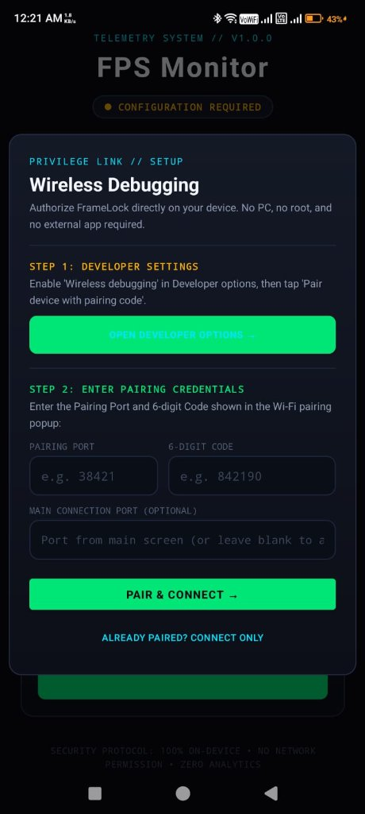

Most Android FPS monitors read screen refresh rates or synthetic Choreographer loops.
FrameLock taps directly into Android’s SurfaceFlinger compositor
hardware via local loopback ADB to deliver 100% accurate, true rendered framerates in any game.

Built from scratch to resolve every limitation of modern Android gaming monitors.
Other apps monitor their own app UI thread (which reports a flat 60/120 Hz regardless of game stutter) or query display modes. FrameLock polls Android's native graphics compositor directly. When a game chokes and drops frames, FrameLock measures the exact monotonic presentation timestamps of the game's actual rendering buffer.
No PC terminal cables. No Shizuku daemon required. FrameLock includes a custom Kotlin ADB pairing client with Conscrypt TLS to pair directly with Android's Wireless Debugging on 127.0.0.1.
Tactical, minimalist floating HUD that you can place anywhere on your screen. Transparent glass aesthetic with zero touch interference for fast gaming swipes.
Sleek cyberpunk dashboard with intuitive status rings, connection heartbeats, and instant one-tap service toggle.
FrameLock has NO android.permission.INTERNET declared. It physically cannot send telemetry or ads to the web. 100% private and air-gapped.
Why 95% of Play Store "FPS counters" show 60 or 120 FPS even when your game is severely lagging.
| Methodology | Source Analyzed | Under Heavy Frame Drops | Requires PC or Shizuku? | Accuracy Rating |
|---|---|---|---|---|
| Standard Store Apps | Choreographer / UI Looper | Lies (Shows 60/120 Hz) | No | Fake Telemetry |
| Display Refresh Counters | Display.getMode() | Static Refresh Rate | No | Completely Irrelevant |
| Desktop ADB Tethering | dumpsys SurfaceFlinger | Real Compositor FPS | Requires PC Cable | Accurate but Tethered |
| Shizuku Companion Apps | Shizuku Binder Service | Real Compositor FPS | Requires 3rd-Party App | Accurate but Complex |
| FrameLock Android | Direct SurfaceFlinger Engine | True Compositor Drops | 100% Standalone On-Device | 100% Hardware Accurate |
One-time pairing over Android's native Wireless Debugging. After initial setup, FrameLock reconnects with one tap.
In Android Developer Options, enable Wireless debugging, then tap Pair device with pairing code.
Switch to FrameLock (or use Android split-screen / recent apps) and enter the 5-digit pairing port and 6-digit code.
Hit the glowing power core button. The floating compositor HUD appears instantly over your favourite games!

Get the official release signed APK directly onto your device or via Google Drive mirror. Fast, free, and open source.
Everything you need to know about FrameLock telemetry and operation.
SurfaceFlinger hardware compositor. Without privileged shell permissions (UID 2000), apps can only guess framerates from their own UI loop. FrameLock connects to Android's built-in Wireless Debugging daemon on your own device (loopback 127.0.0.1) to obtain UID 2000 access completely legally and without requiring root or a PC.